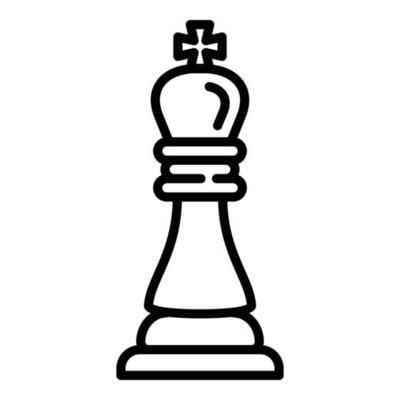
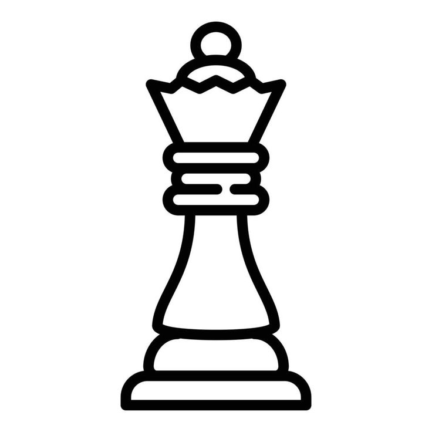
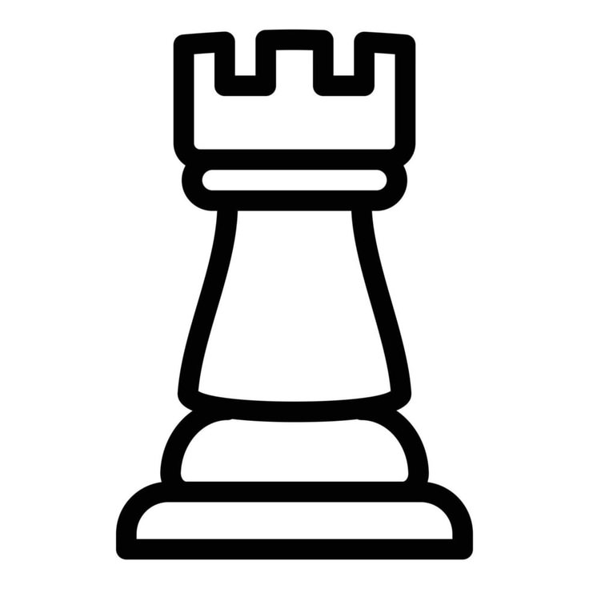
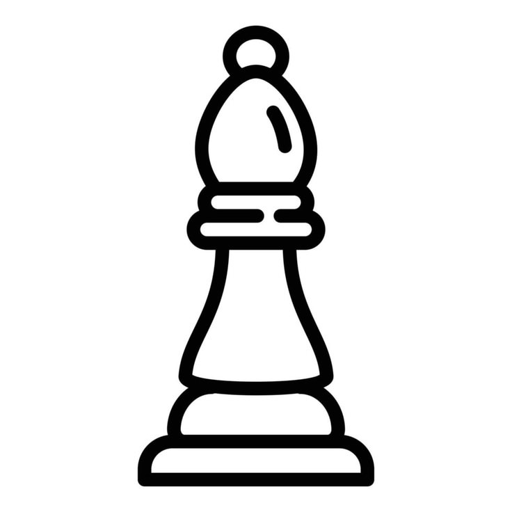
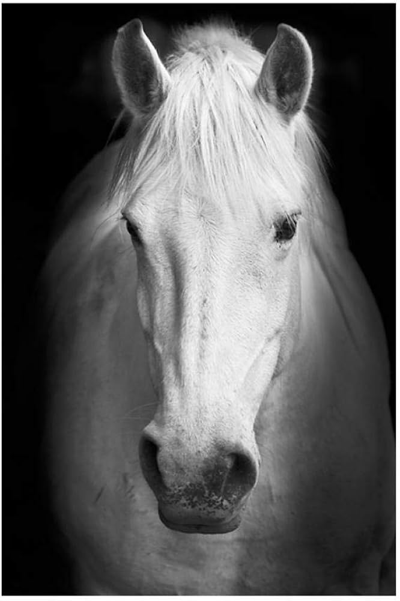
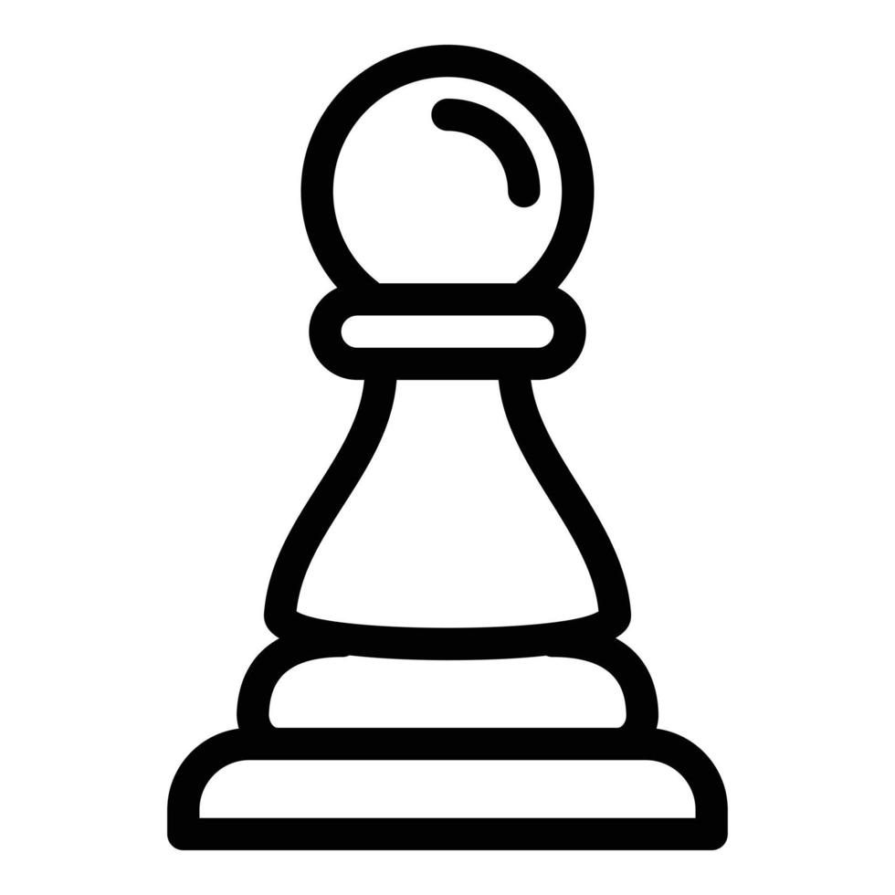

El ajedrez es un juego muy antiguo con reglas complejas y movimientos de piezas muy concretos.
Inventado probablemente en Asia, más concretamente India. Probablemente nacido de una evolución del chaturanga.
| Ficha | Movimiento |
 | El rey se mueve únicamente una casilla, en todas las direcciones. |
 | La reina se mueve en todas las direcciones. |
 | La torre se mueve únicamente en horizontal. |
 | El snipper se mueve únicamente en diagonal. |
 | El caballo se mueve en forma de L. |
 | El peón se mueve únicamente una casilla hacia adelante, salvo en su primer movimiento, que puede mover dos casillas. Captura en diagonal. |